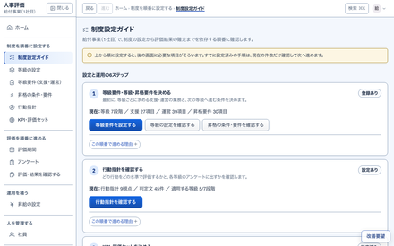
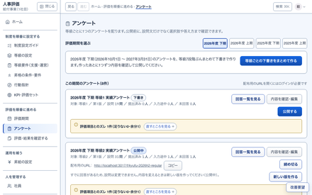
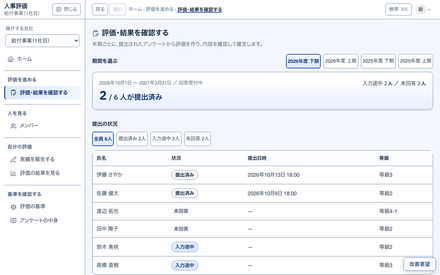
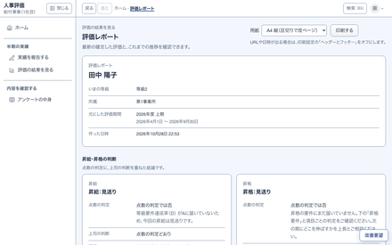

数字で見る聞き取りから
88 件移行したときの、確定済みの評価聞き取り:H30
4 つ使う人の役割聞き取り:H01
14 日期を締め切ってから確定まで聞き取り:H36
最初の版でできることこの 5 つ。くわしい画面はボード番号のページで
1会社と使う人を用意し、役割ごとにログインして使う
ボード 04・05（S01〜S10）
システム全体管理者
2会社ごとの評価の制度（等級・等級要件・行動指針・KPI・昇給）を設定する
ボード 06・07・09（S11〜S26）
会社の管理者
3評価期間とアンケートを作り、一般の社員が実績を答える
ボード 08・10（S27〜S36）
会社の管理者一般の社員
4しくみが点数と判定を出し、マネージャーが根拠を確かめて確定する
ボード 11・13（S37〜S42）
マネージャー
5確定した結果と評価レポートを見て印刷し、使いにくい点を改善要望で送る
ボード 09・10・12（S43〜S47）
一般の社員会社の管理者
半期の流れ白い段は人、青い段はしくみが自動で
1制度を決める

等級・等級要件・行動指針・KPI・昇給を決める。
会社の管理者
2期間とアンケートを出す

等級ごとのアンケートを公開する。
会社の管理者
3実績を答えて提出

スマホか PC で答えて提出する。
一般の社員
14点数と判定を出す

S38でマネージャーが「提出済みの回答から評価を作る」を押すと、計算する。
しくみ
25確かめて確定する

確定すると、本人がレポートで見られる。
マネージャー
3